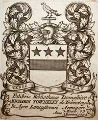
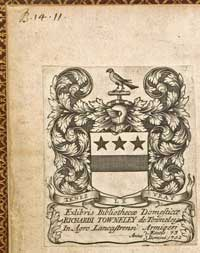
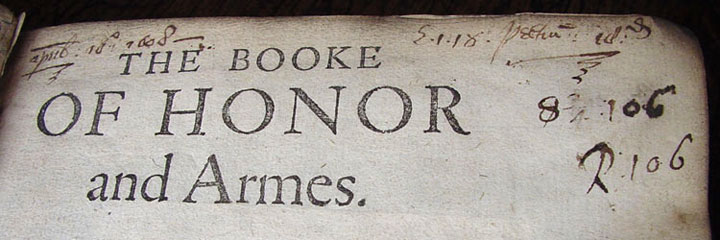

The Towneleys were a gentry family who remained resolutely Catholic subsequent to the English Reformation. They put great store in the education of their children and the preservation of their heritage. Books owned by the family were sold at auction during the 19th century and are now scattered across many of the world's greatest libraries.
The library's origins can be traced back to well before 1603, in which year Richard Towneley (1566-1628) had his book bindings impressed with his coat of arms and the motto Tenez Le Vray. The library collection was greatly extended by his grandson, Richard Towneley (1629-1707), who in 1702 added his own book-plate to all the books in the library.It is likely that this Richard wanted to make a permanent record of his book collection in order to facilitate a particular requirement in his will : "I doe hereby leave and devise to my son Charles and the heires of my Family all my bookes and Mathematical Instruments and doe will and devise that the same shall be preserved and kept continually at the Hall of Towneley in nature of Heirloomes for the good and service of my Family and posterity (many of them being valuable and hard to be gott) and the same to be kept together in the Library where they are or some other convenient roome."
The earliest catalogue of the original library is now in Chetham's Library in Manchester - Chetham_MunA.2.67_v2.pdf [304 kb.]. It contains a shelf list locating 1378 books, the latest book being published in 1686, together with a draft subject catalogue of those books together with another 600 titles with no identifying shelf mark. This draft catalogue dates from around 1702 and was superseded by a later subject catalogue now in John Rylands University Library, Manchester - John_Rylands_MS735.pdf [720 kb.]. That catalogue dates from around the time of Richard's death in 1707 and includes over 100 additional titles and, with a number of losses from the earlier catalogue, records 1979 books. In the later catalogue, the locations of the books are not given by the old shelf mark but instead each title has an identifier based upon the book's height together with a serial number.
There is yet another catalogue [in private ownership] which is a clean copy of the John Rylands version.
It is the only one of the three manuscripts with Richard's book-plate and is dated 1711. The entries
were copied from the earlier working version in a large, clear hand. Further books were added in a
number of different hands with the last addition being dated 1748. The additions arrived at a much
slower rate than in the time of Richard 'the virtuoso' and reflect a very different world. They included five
volumes of The Tatler (which appeared thrice weekly from 1709) and two volumes of The Guardian
(published from 1713). Most of the new books were for entertainment.
Towneley armorial binding 1603

Richard Towneley's bookplate dated 1702

The shelf mark and catalogue identifier of books from this library can normally be found on the leaf carrying the bookplate, as seen above, shelfmark B.14.11 top left corner[now in Bancroft Library, University of California, Berkeley] or or on the book's title page.

The shelf mark and catalogue identifier on the book's title page can be seen in "The Booke of Honor and Armes" E.1.18 / R106 now in Chetham's Library, Manchester.